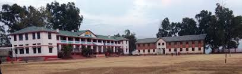
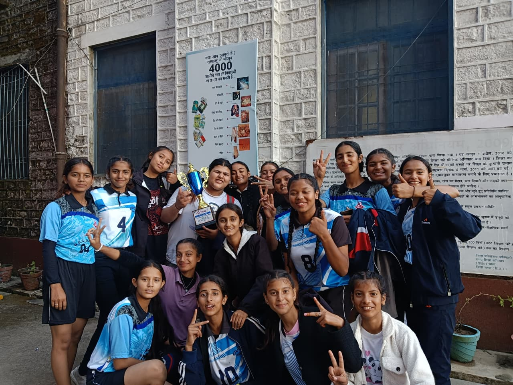
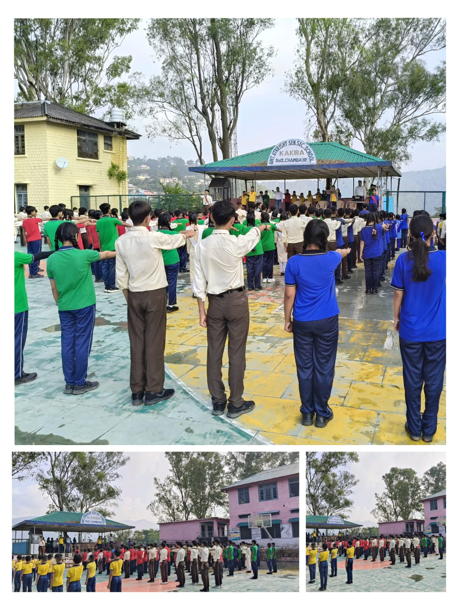
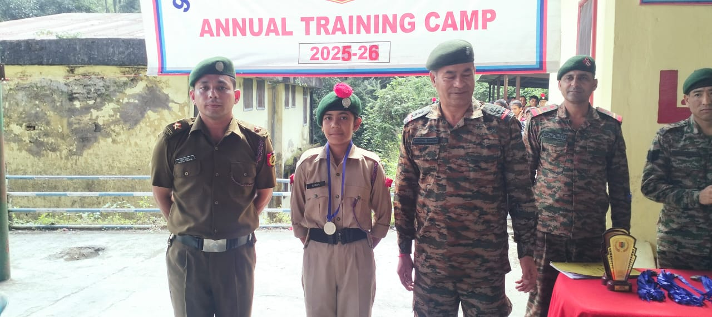
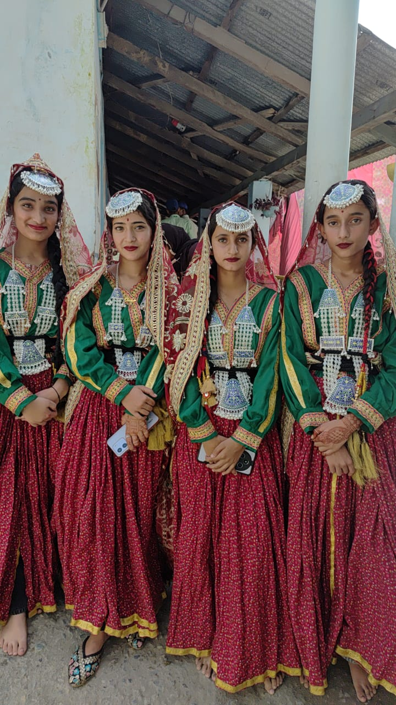
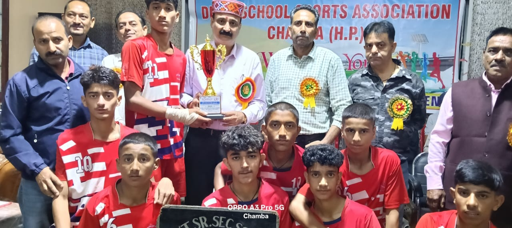
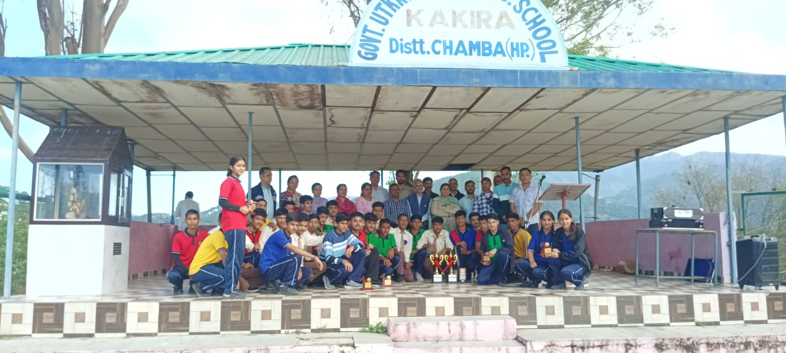

Empowering students for a brighter future.
Government Senior Secondary School (GSSS), Kakira, is a co-educational, Hindi-medium school located in the Chamba district of Himachal Pradesh.








Principal
M.A., B.Ed.
Leading GSSS Kakira with dedication and vision, Mrs. Vashisht brings over 15 years of educational experience, fostering academic excellence and holistic development.
Vice Principal
M.Sc., B.Ed.
Supporting the school's mission with expertise in administration and academics, Mr. Sharma ensures smooth day-to-day operations and student welfare.
📍 Kakira Village, Chowari Block, District Chamba, Himachal Pradesh, India
📧 gssskakira11@rediffmail.com | ☎ Contact via District Education Office, Chamba